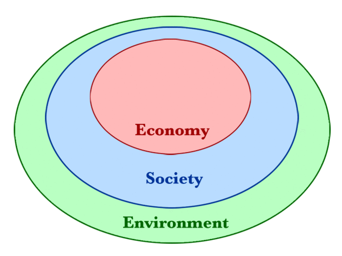

Table of Contents
36. Natural Resource Economics
36.1. Introduction to Natural Resource Economics
36.1.1. Types of Natural Resources
36.1.2. Basic Economics of Natural Resources
36.1.3. Externalities and Impacts on Resource Allocation
36. Natural Resource Economics
36.1. Introduction to Natural Resource Economics
36.1.1. Types of Natural Resources
Natural resource economics focuses on the supply, demand, and allocation of the Earth's natural resources.
Learning Objective
Analyze natural resource economics and explain the types of natural resources that exist.
Key Points
- Natural resource economics focuses on the supply, demand, and allocation of the Earth's natural resources.
- Every man-made product in an economy is composed of natural resources to some degree.
- Natural resources can be classified as potential, actual, reserve, or stock resources based on their stage of development.
- Natural resources are either renewable or non-renewable depending on whether or not they replenish naturally.
- Natural resource utilization is regulated through the use of taxes and permits. The government and individual states determine how resources must be used and they monitor the availability and status of the resources.
Key Terms
- Renewable
- Sustainable; able to be regrown or renewed; having an ongoing or continuous source of supply; not finite.
- natural resource
- Any source of wealth that occurs naturally, especially minerals, fossil fuels, timber, etc.
- depletion
- The consumption of a resource faster than it can be replenished.
Natural Resource Economics
Natural resource economics focuses on the supply, demand, and allocation of the Earth's natural resources. It's goal is to gain a better understanding of the role of natural resources in the economy. Learning about the role of natural resources allows for the development of more sustainable methods to manage resources and make sure that they are maintained for future generations.The goal of natural resource economics is to develop an efficient economy that is sustainable in the long-run .

The society and the economy are subsets of the environment. It is not possible for societal and economic systems to exist independently from the environment. For this reason, natural resource economics focuses on understanding the role of natural resources in the economy in order to develop a sufficient and sustainable economy that protects natural resources.
Types of Natural Resources
Natural resources are derived from the environment. Some of the resources are essential to survival, while others merely satisfy societal wants. Every man-made product in an economy is composed of natural resources to some degree.
There are numerous ways to classify the types of natural resources, they include the source of origin, the state of development, and the renewability of the resources.
In terms of the source of origin, natural resources can be divided into the following types:
- Biotic: these resources come from living and organic material, such as forests and animals, and include the materials that can be obtained them. Biotic natural resources also include fossil fuels such as coal and petroleum which are formed from organic matter that has decayed.
- Abiotic: these resources come from non-living and non-organic material. Examples of these resources include land, fresh water, air, and heavy metals (gold, iron, copper, silver, etc.).
Natural resources can also be categorized based on their stage of development including:
- Potential resources: these are resources that exist in a region and may be used in the future. For example, if a country has petroleum in sedimentary rocks, it is a potential resource until it is actually drilled out of the rock and put to use.
- Actual resources: these are resources that have been surveyed, their quantity and quality has been determined, and they are currently being used. The development of actual resources is dependent on technology.
- Reserve resources: this is the part of an actual resource that can be developed profitably in the future.
- Stock resources: these are resources that have been surveyed, but cannot be used due a lack of technology. An example of a stock resource is hydrogen.
Natural resources are also classified based on their renewability:
- Renewable natural resources: these are resources that can be replenished. Examples of renewable resources include sunlight, air, and wind . They are available continuously and their quantity is not noticeably affected by human consumption. However, renewable resources do not have a rapid recovery rate and are susceptible to depletion if they are overused.
- Non-renewable natural resources: these resources form extremely slow and do not naturally form in the environment. A resource is considered to be non-renewable when their rate of consumption exceeds the rate of recovery. Examples of non-renewable natural resources are minerals and fossil fuels.
There is constant worldwide debate regarding the allocation of natural resources. The discussions are centered around the issues of increased scarcity (resource depletion) and the exportation of natural resources as a basis for many economies (especially developed nations). The vast majority of natural resources are exhaustible which means they are available in a limited quantity and can be used up if they are not managed correctly. Natural resource economics aims to study resources in order to prevent depletion.
Natural resource utilization is regulated through the use of taxes and permits. The government and individual states determine how resources must be used and they monitor the availability and status of the resources. An example of natural resource protection is the Clean Air Act. The act was designed in 1963 to control air pollution on a national level. Regulations were established to protect the public from airborne contaminants that are hazardous to human health. The act has been revised over the years to continue to protect the quality of the air and health of the public in the United States.
Wind is an example of a renewable natural resource. It occurs naturally in the environment and has the ability to replenish itself. It has also been used as a form of energy development through wind turbines.
36.1.2. Basic Economics of Natural Resources
Natural resource economics focuses on the supply, demand, and allocation of the Earth's natural resources to create a more efficient economy.
Learning Objective
Explain basic natural resource economics
Key Points
- As a field of academic research, natural resource economics addresses the connections and interdependence between human economies and natural ecosystems.
- By studying natural resources, economists learn how to develop more sustainable methods of managing resources to ensure that they are maintained for future generations.
- Natural resource economics is studied on an academic level, and the findings are used to shape and direct policy-making for environmental issues. These issues include resource extraction, depletion, protection, and management.
- Natural resource economics findings impact policies for environmental work including issues such as extraction, depletion, protection, and management.
Key Terms
- natural resource
- Any source of wealth that occurs naturally, especially minerals, fossil fuels, timber, etc.
- sustainable
- Able to be sustained for an indefinite period without damaging the environment, or without depleting a resource.
Natural Resource Economics
Natural resource economics focuses on the supply, demand, and allocation of the Earth's natural resources. The main objective of natural resource economics is to gain a better understanding of the role of natural resources in the economy. By studying natural resources, economists learn how to develop more sustainable methods of managing resources to ensure that they are maintained for future generations. Economists study how economic and natural systems interact in order to develop an efficient economy.
As a field of academic research, natural resource economics addresses the connections and interdependence between human economies and natural ecosystems. The focus is how to operate an economy within the ecological constraints of the earth's natural resources .
{kind=link}
The society and the economy are subsets of the environment. It is not possible for social and economic systems to exist independently from the environment. Natural resource economics focuses on the demand, supply, and allocation of natural resources to increase sustainability.
Areas of Study
Economists study the commercial and recreational use and exploitation of resources. Traditionally, natural resource economics focused on fishery, forestry, and mineral models. However, in recent years many more topics have become increasingly important, including air, water, and the global climate. Natural resource economics is studied on an academic level, and the findings are used to shape and direct policy-making for environmental issues.
Examples of areas of study in natural resource economics include:
- welfare theory
- pollution control
- resource exhaustibility
- environmental management
- resource extraction
- non-market valuation
- environmental policy
Additionally, research topics of natural resource economists can include topics such as the environmental impacts of agriculture, transportation and urbanization, land use in poor and industrialized countries, international trade and the environment, and climate change.
Impact of Natural Resource Economics
The findings of natural resource economists are used by governments and organizations to better understand how to efficiently use and sustain natural resources. The findings are used to gain insight into the following environmental areas:
- Extraction: the process of withdrawing resources from nature. Extractive industries are a basis for the primary sector of the economy. The extraction of natural resources substantially increases a country's wealth. Economists study extraction rates to make sure that resources are not depleted. Also, if resources are extracted too quickly, the sudden inflow of money can cause inflation. Economists seek to maintain a sense of balance within extraction industries.
- Depletion: the using up of natural resources, which is considered to be a global sustainable development issue. Many governments and organizations have become increasingly involved in preserving natural resources. Economists provide data to determine how to balance the needs of societies now and preserve resources for the future.
- Protection: the preservation of natural resources for the future. The findings of economists help governments and organization develop measures of protection to sustain natural resources. Protection policies state the necessary actions internationally, nationally, and individually that must take place to control natural resource depletion that is a result of human activity.
- Management: the use of natural resources taking into account economic, environmental, and social concerns. This process deals with managing natural resources such as land, water, soil, plants, and animals. Particular focus is placed on how the preservation of natural resources impacts the quality of life now and for future generations.
36.1.3. Externalities and Impacts on Resource Allocation
Production and use of resources can have a positive or negative effect on the allocation of the natural resources.
Learning Objective
Examine externalities and how they the impact resource allocation of natural resources.
Key Points
- An externality is a cost or benefit that affects a party who did not choose to incur the cost or benefit.
- A negative externality, also called the external cost, imposes a negative effect on a third party.
- When external costs are present, the market equilibrium use of natural resources is inefficient because the social benefit is less than the social cost. In other words, society would have been better off if fewer natural resources had been used.
- Positive externalities, also referred to as external benefits, imposes a positive effect on a third party.
- Assuming that natural resources are used and also sustained, the external benefits of goods produced by natural resources impacts the majority of the public in a positive way.
Key Term
- externality
- An impact, positive or negative, on any party not involved in a given economic transaction or act.
Resource Allocation
Resource allocation is division of goods for the use of production within the economy. The needs and wants of society as well as industries impact what is produced. Suppliers focus on producing the varieties of goods and services that will yield the greatest satisfaction to consumers. In the long run, externalities directly impact resource allocation. It must be determined whether the production, as well as the process of production, creates more benefits that costs for the producers, consumers, and society as a whole.
Externalities
An externality is a cost or benefit that affects a party who did not choose to incur the cost or benefit. In regards to natural resources, production and use of resources can have a positive or negative effect on the allocation of the resources.
External Costs
A negative externality, also called the external cost, imposes a negative effect on a third party to an economic transaction. Many negative externalities impact natural resources negatively because of the environmental consequences of production and use. For example, air pollution from factories and vehicles can cause damage to crops . Likewise, water pollution has a negative impact of plants and animals.
Air pollution from vehicles is an example of a negative externality. It affects other than those who drive the vehicle and those who sell the gas.
In the case of negative externalities, the marginal private cost of consuming a good is less than the marginal social or public cost. The marginal social benefit should equal the marginal social cost (i.e. production should only be increased when the marginal social benefit exceeds the marginal social cost). When external costs are present, the use of natural resources is inefficient because the social benefit is less than the social cost. In other words, society and the natural resources involved would have been better off if the natural resources had not been used at all.
Developed countries use more natural resources and must enact sustainable development plan for the use of resources. Human needs must be met, but the environment and natural resources must be preserved. Examples of resource depletion include mining, petroleum extraction, fishing, forestry, and agriculture.
External Benefits
Positive externalities, also referred to as external benefits, impose a positive effect on a third party. An example of a positive externality is when crops are pollinated by bees from a neighboring bee farm. In order to achieve the socially optimal equilibrium, the marginal social benefit should equal the marginal social cost (i.e. production should be increased as long as the marginal social benefit exceeds the marginal social cost). Assuming that natural resources are used and also sustained, the external benefits of goods produced by natural resources impacts the majority of the public in a positive way.